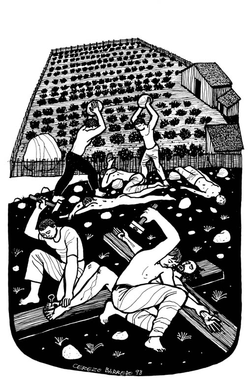
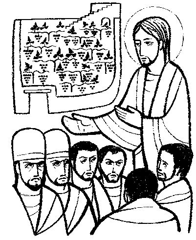

www.logrus.ca Year
A
Proper 22
This week's lessons: Exodus 20:1-4, 7-9, 12-20 and Psalm 19 • Isaiah 5:1-7 and Psalm 80:7-15 • Philippians 3:4b-14 • Matthew 21:33-46
Opening prayer by leader, or invite another participant to pray, or use:
Almighty God, who has caused all Holy Scripture to be written for our learning, open our ears and hearts today to learn from your word and from one another, we ask in Jesus' Name. Amen
Set the calendar-clock to the right date. Pentecost is the season of the church's growth, beginning with Pentecost Day which is the birthday of the church, and continuing to the end of the church year.Its colour is green.
Today, the Gospel reviews for us the parable of the vineyard and the dishonest tenants.
What was the sermon on? -
What was the Gospel lesson? -
Did anyone have any insights about...
1. What are the differences between your approach to day-to-day life, and your calling to be of the same mind, having the same love, being in full accord and of one mind?
2. As you look around your church and your community, who are the quiet ones who "empty" themselves rather than grasping at high places or recognition for what they are doing?
3. Where, in the life of Emmanuel Church, are the places of "consolation from love," of "compassion and sympathy"?
4. In what ways are the members of Emmanuel all working out our own salvation with fear and trembling, together.
Moreover if thy brother shall trespass against thee, go and tell him his fault between thee and him alone: if he shall hear thee, thou hast gained thy brother.
But if he will not hear thee, then take with thee one or two more, that in the mouth of two or three witnesses every word may be established.
And if he shall neglect to hear them, tell it unto the church: but if he neglect to hear the church, let him be unto thee as an heathen man and a publican.
Verily I say unto you, Whatsoever ye shall bind on earth shall be bound in heaven: and whatsoever ye shall loose on earth shall be loosed in heaven.
Again I say unto you, That if two of you shall agree on earth as touching any thing that they shall ask, it shall be done for them of my Father which is in heaven.
For where two or three are gathered together in my name, there am I in the midst of them.
What parallels do you see between this reading and the Exodus reading?
Pew-work Hand-outs
“Pew-work” is like Home-work, except that it is done in the pews, instead of being done at home. Because it is focussed on the readings (as the sermon, presumably, also is) it can be done during the sermon to help the listener concentrate. Or, it can be done while waiting for everyone else to finish their communion. It isn't done during prayers, or hymns, or the readings, because
During Prayers, we pray
During Hymns, we sing
During the Readings, we listen

Cerezo
Barredo's Lectionary illustrations --
http://www.servicioskoinonia.org/cerezo/dibujosA/50OrdinarioA27.jpg

Misioneros del Sagrado Corazón en el Perú: From http://www.mscperu.org/grafic/graficoslit/aTO/picAto/27_to_a.jpg
Which of the commandments are easy? ___________________________________
______________________________________________________________
Which of the commandments are hard? ___________________________________
______________________________________________________________
20 God said to the people of Israel:
2I am the Lord your God, the one who brought you out of Egypt where you were slaves.
3Do not worship any god except me.
4Do not make idols that look like anything in the sky or on earth or in the ocean under the earth. 5Don’t bow down and worship idols. I am the Lord your God, and I demand all your love. If you reject me, I will punish your families for three or four generations. 6But if you love me and obey my laws, I will be kind to your families for thousands of generations.
7Do not misuse my name. I am the Lord your God, and I will punish anyone who misuses my name.
8Remember that the Sabbath Day belongs to me. 9You have six days when you can do your work, 10but the seventh day of each week belongs to me, your God. No one is to work on that day—not you, your children, your slaves, your animals, or the foreigners who live in your towns. 11In six days I made the sky, the earth, the oceans, and everything in them, but on the seventh day I rested. That’s why I made the Sabbath a special day that belongs to me.
12Respect your father and your mother, and you will live a long time in the land I am giving you.
16Do not tell lies about others.
17Do not want anything that belongs to someone else. Don’t want anyone’s house, wife or husband, slaves, oxen, donkeys or anything else.
What things have your Father and Mother done for you that make it easy to honour them?________________________________________________________________________________________________________________________________________________________________________________________________________________________________________________________________________________________________________________________________
If it were
always easy, God would not have had to make it a commandment. When
is it hard to honour your parents?
_______________________________________________________________
________________________________________________________________________________________________________________________________________________________________
What are ways that you can honour someone when you don't feel like honouring them?
_______________________________________________________________________________________________________________________________________________________________________________________________________________________________________________________________________________________________________________________________________________________________________________________________________________________________
|
What Scripture is the Sermon is based on? |
__________________________________ |
|
What is the main point of the Sermon? |
__________________________________ |
|
Write down any figures of speech used by the preacher (Metaphors, Similes, hyperbole) |
__________________________________ |
|
Write down any new, unusual or particularly interesting words the preacher uses |
_______________
|
|
_________________________________________ |
|
_________________________________________ |
|
_________________________________________ |
|
_________________________________________ |
|
_________________________________________ |
|
_________________________________________ |
Next week: Exodus 32:1-14 and Psalm 106:1-6, 19-23 • Isaiah 25:1-9 and Psalm 23 • Philippians 4:1-9 • Matthew 22:1-14